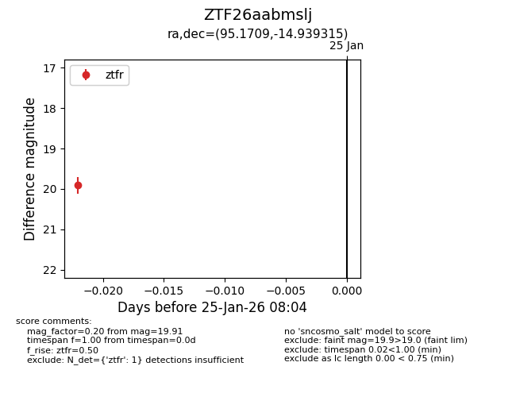
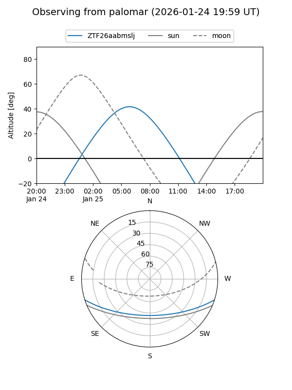

ZTF26aabmslj
Target ZTF26aabmslj at 2026-01-27 08:06
Aliases and brokers:
FINK: link
Lasair: link
ALeRCE: link
alt names
ZTF26aabmslj (ztf,fink_ztf)
Coordinates:
equatorial (ra, dec) = 95.1709,-14.93931
equatorial (HMS+DMS) = 06:20:41.02,-14:56:21.53
galactic (l, b) = (223.0280,-13.44997)
Flags:
Photometry:
last ztfr=19.91
1 ztfr detections
Lightcurve

Visibility


Additional plots